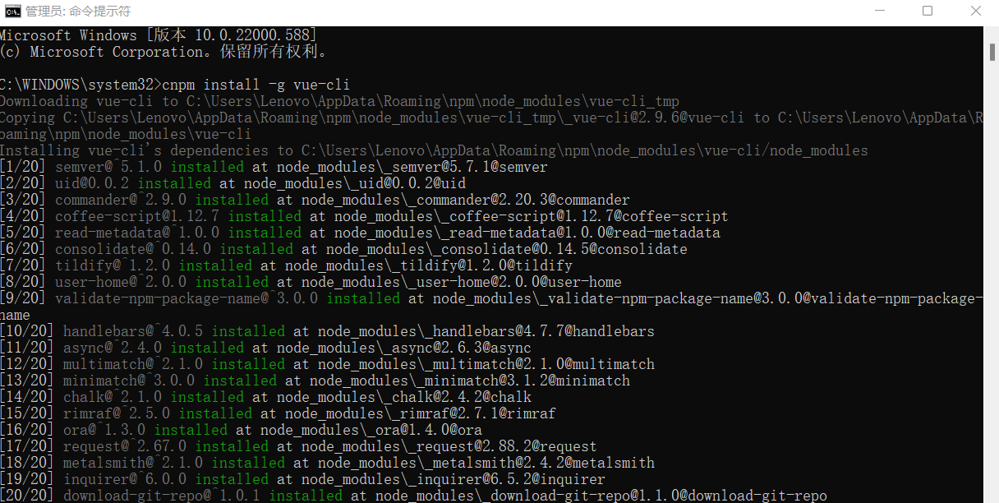

Vue是一套用于构建用户界面的渐进式框架。
Vue.js的安装
方式一:直接CDN引入
可以选择引入开发环境/生产环境版本
--开发环境版本，包含了有帮助的命令行警告--
<script src="https://cdn.jsdelivr.net/npm/vue@2/dist/vue.js"></script>
--生产环境版本，优化了尺寸和速度--
<script src="https://cdn.jsdelivr.net/npm/vue@2"></script>
方式二:下载和引入
开发环境版本:https://vuejs.org/js/vue.js
生成环境版本:https://vuejs.org/js/vue.min.js
方式三:npm安装(vue-cli)
方式三的安装,首先确保已经安装了node.js。如果没有安装node.js就无法使用集成在node.js的npm包管理器,
也就无法执行npm相关的命令。
由于npm命令下的某些资源是国外的,下载速度慢,且易下载失败。所以我们要将npm改为cnpm,也就是使用国内的npm镜像下载。
在命令行中输入 npm install -g cnpm --registry=http://registry.npm.taobao.org
成功执行以上命令之后,我们就可以用cnpm代替npm命令了。
安装vue-cli 脚手架构建工具
在命令行中运行命令 cnpm install -g vue-cli ，然后等待安装完成。
